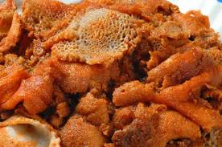

Firfir

Description
Firfir is a traditional Ethiopian dish. It is made by soaking
Injera in a special sauce made with
spiced clarified butter and
berbere.
Below is a step-by-step guide to making an authentic Ethiopian Firfir dish.
This recipe serves two.
Ingredients
- 2 red onions, finely diced
- 1/3 cup vegetable oil
- 1 tbsp garlic paste
- 4 ripe tomatoes, finely diced
- 3 cups water
- 2 tbps berbere
- 1/2 cup spiced clarified butter (kibbeh)
- 2 pieces of Injera
Directions
- Place onions in a large saucepan over medium-high heat and cook covered for about
5 minutes until it starts to brown
- Add vegetable oil and garlic paste. Cook for 5 more minutes until fragrant.
- Add in your tomatoes and cook for 5-7 minutes. Don't forget to stir regularly.
- Add your berbere seasoning into the saucepan along with 1/2 a cup of water. Reduce
the heat to medium and let it simmer for about 10 minutes. Add in 1/3 of a cup
every few minutes until the sauce starts to thicken.
- Add in the spiced clarified butter and salt.
- Take your saucepan off the heat, tear 1 piece of Injera into palm-sized pieces, and
fold them gently into the sauce (make sure you don't over do it as it could result
in a mushy texture).
- Place the other piece of Injera on a plate along with your desired amount of Firfir and enjoy!